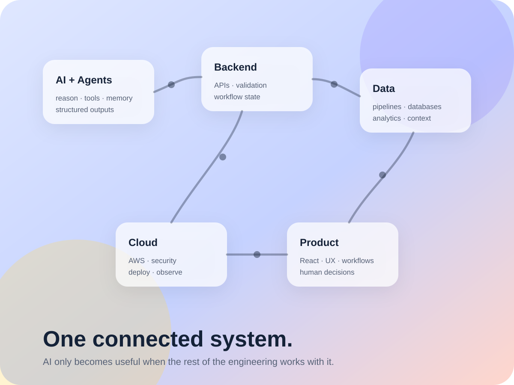

01
Communicate quickly
Give recruiters and hiring teams a clear picture of my technical direction, strongest projects, academic background, and the kinds of roles I am preparing for.
KRISHIL PATEL / CS + APPLIED PHYSICS
From reasoning and agents to APIs, data, cloud, and usable products.
I’m a Rutgers Computer Science & Applied Physics student building complete software systems across AI/ML, agentic workflows, backend engineering, data pipelines, and cloud infrastructure.

Website objectives
This portfolio is designed to explain not only what I have worked on, but how I think about engineering: connecting AI, backend software, data, infrastructure, and interface design into systems that are understandable, auditable, and useful.
Give recruiters and hiring teams a clear picture of my technical direction, strongest projects, academic background, and the kinds of roles I am preparing for.
Go beyond résumé bullets with architecture visuals, system context, technical decisions, and project narratives that show how the pieces connect.
Let engineers, researchers, professors, and technical interviewers move from a concise overview into detailed project, research, skill, and experience information.
Featured work
My strongest projects combine multiple engineering layers instead of isolating one technology. The full Work page explains their architecture, technical focus, and outcomes.
How to explore
Home introduces the site and its goals. Work shows projects in depth. Experience covers research. About connects education, skills, and interests. Contact provides direct ways to reach me.